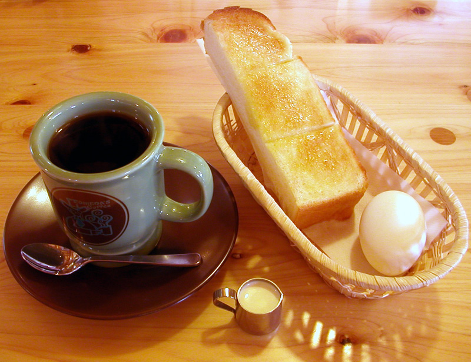

1910 · Fannie Merritt Farmer · BEVERAGES
Boiled Coffee
The Boston Cooking-School Cook Book

Historical Recipe
The following text is extracted from the 1910 edition, retaining historical terminology and quantities.
Original Ingredients & Directions
1 cup coffee
1 egg
1 cup cold water
6 cups boiling water
Scald granite-ware coffee-pot. Wash egg, break, and beat slightly. Dilute with one-half the cold water, add crushed shell, and mix with coffee. Turn into coffee-pot, pour on boiling water, and stir thoroughly. Place on front of range, and boil three minutes. If not boiled, coffee is cloudy; if boiled too long, too much tannic acid is developed. The spout of pot should be covered or stuffed with soft paper to prevent escape of fragrant aroma. Stir and pour some in a cup to be sure that spout is free from grounds. Return to coffee-pot and repeat. Add remaining cold water, which perfects clearing. Cold water being heavier than hot water sinks to the bottom, carrying grounds with it. Place on 38 back of range for ten minutes, where coffee will not boil. Serve at once. If any is left over, drain from grounds, and reserve for making of jelly or other dessert.
Egg-shells may be saved and used for clearing coffee. Three egg-shells are sufficient to effect clearing where one cup of ground coffee is used. The shell performs no office in clearing except for the albumen which clings to it. Burnett’s Crystal Coffee Settler, or salt fish-skin, washed, dried, and cut in inch pieces, is used for same purpose.
Coffee made with an egg has a rich flavor which egg alone can give. Where strict economy is necessary, if great care is taken, egg may be omitted. Coffee so made should be served from range, as much motion causes it to become roiled.
Tin is an undesirable material for a coffee-pot, as tannic acid acts on such metal and is apt to form a poisonous compound.
When coffee and scalded milk are served in equal proportions, it is called Café au lait . Coffee served with whipped cream is called Vienna Coffee .
To Make a Small Pot of Coffee. Mix one cup ground coffee with one egg, slightly beaten, and crushed shell. To one-third of this amount add one-third cup cold water. Turn into a scalded coffee-pot, add one pint boiling water, and boil three minutes. Let stand on back of range ten minutes; serve. Keep remaining coffee and egg closely covered, in a cool place, to use two successive mornings.
To Make Coffee for One. Allow two tablespoons ground coffee to one cup cold water. Add coffee to cold water, cover closely, and let stand over night. In the morning bring to a boiling-point. If carefully poured, a clear cup of coffee may be served.
Automatically extracted transcription; editorial verification pending. Historical instructions may not meet modern food-safety standards.